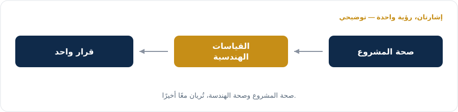

NextEmTech
التقنية الناشئة القادمة
مجموعة من المحترفين وعوامل التحول، يحوّلون انضباط الذكاء الاصطناعي وإدارة المشاريع إلى نتائج تنفيذ حقيقية — لا مجرد تجارب أولية.
تنفيذ ذكي يحقق القيمة — مبني على الاستدامة، لا على يوم الإطلاق فقط.
الذكاء الاصطناعي يقدّم التحليل، والإنسان يملك القرار.
نعمل عن بُعد، ونقدّم خدماتنا عبر الإنترنت — لخدمة مؤسسات ذات حجم فاعل، حول العالم.
مساران، هدف واحد: تبنٍّ لـ AI يصمد فعليًا في بيئة الإنتاج.
استراتيجية التحول الذكي، وتبنّي AI، وهندسة SaaS، واستشارات PM/CPMAI، وتطبيق Agentic AI — دائمًا بإشراف بشري.
التحضير لشهادة CPMAI، ومنهجية Agile & Scrum المؤسسية، والطلاقة في AI — تُقدَّم بالعربية والإنجليزية.
التوأم الرقمي لعمليات المشاريع — يدمج إدارة المشاريع وقياسات DORA ضمن مركز قيادة واحد مدعوم بـ AI.
بنية Enterprise Agentic AI، تتضمن تطبيق AI Agents.
مدير البرنامج هو من يقرر — ويبقى مسؤولًا عن القرار.
"تقارير صحة المشروع تذهب إلى اللجنة التوجيهية. وصحة الهندسة تبقى مع قادة الفرق. كلاهما صحيح. ولا واحد منهما كامل. ولا أحد يقرأهما معًا."
